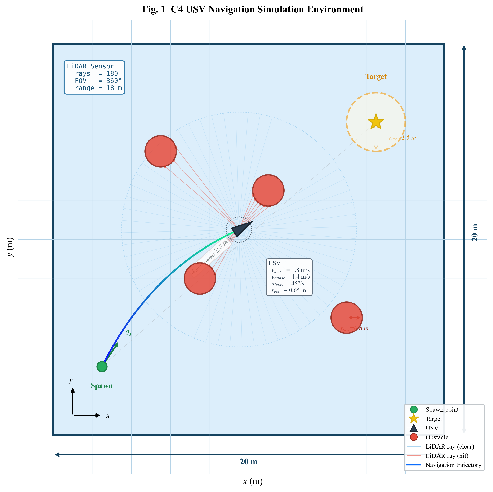
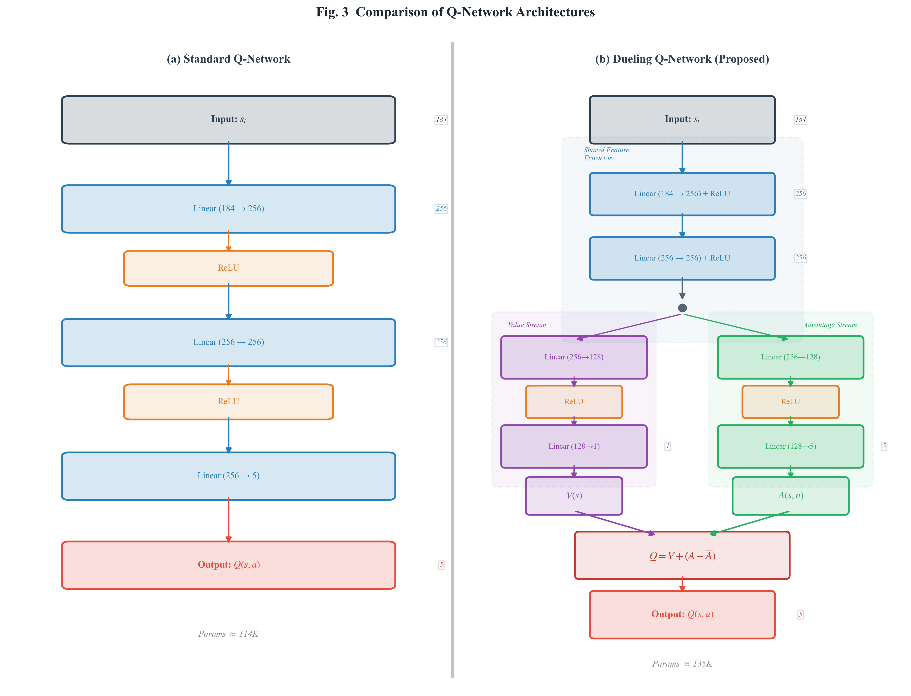
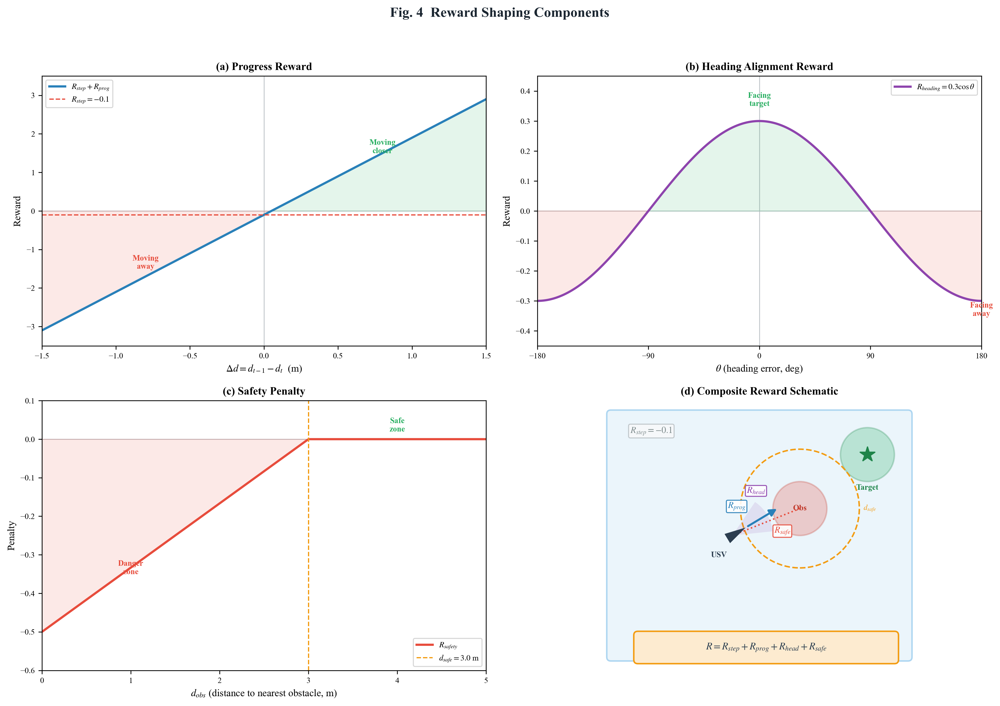
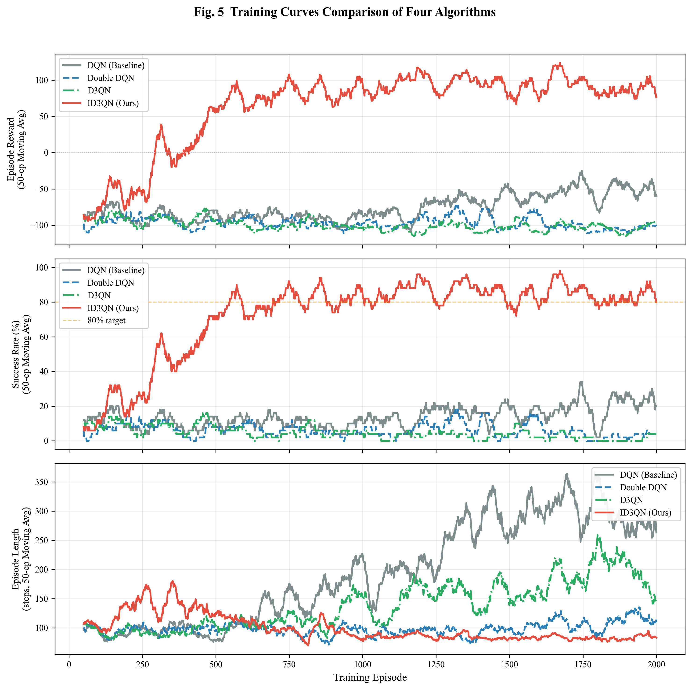
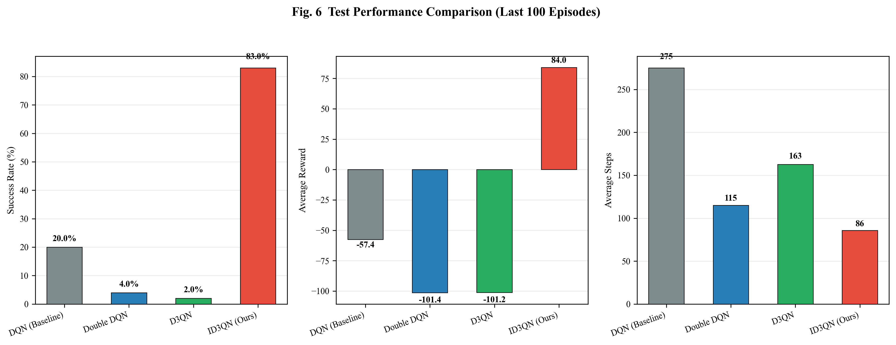
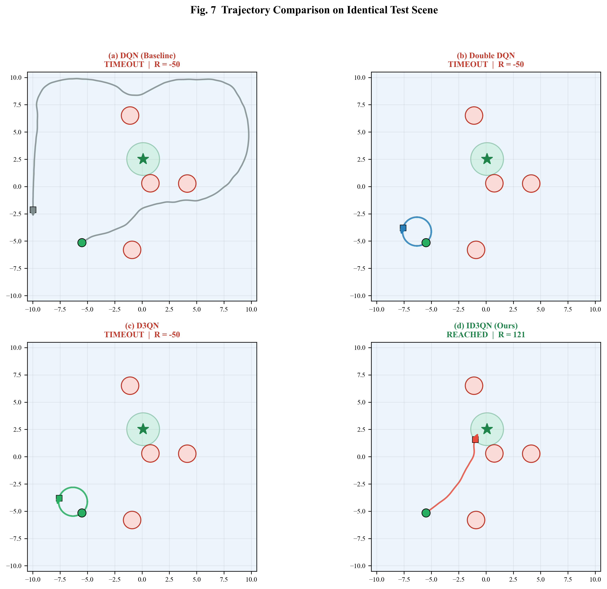
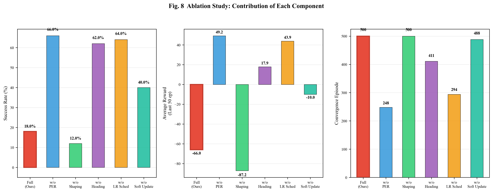

Test Performance Comparison (2000 Episodes)
| Algorithm | Success Rate | Avg Reward | Avg Steps | Convergence Ep. |
|---|---|---|---|---|
| DQN (Baseline) | 20.0% | -57.4 | 275 | N/A |
| Double DQN | 4.0% | -101.4 | 115 | N/A |
| D3QN | 2.0% | -101.2 | 163 | N/A |
| ID3QN (Ours) | 83.0% | 84.0 | 86 | 294 |
Success Rate Comparison
Average Reward Comparison
Ablation Study
Paper Figures

Fig.1 Environment Schematic

Fig.2 Algorithm Architecture

Fig.3 Network Structure

Fig.4 Reward Shaping

Fig.5 Training Curves

Fig.6 Test Performance

Fig.7 Trajectory Comparison

Fig.8 Ablation Study